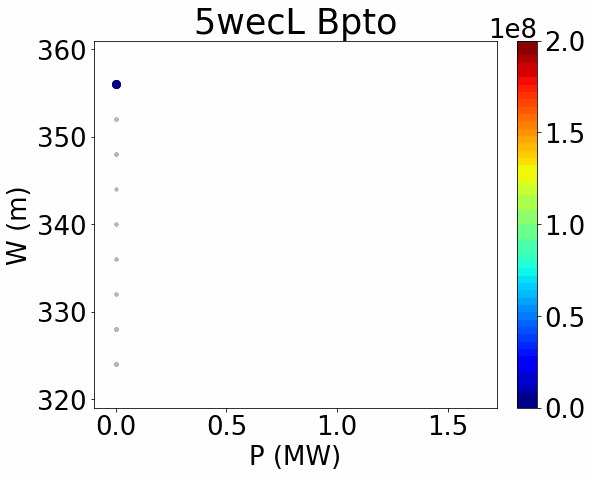

Numerical methods for multiphase flows
The Baer-Nunziato system of equations is widely used for describing interacting compressible multi-phase flows. A semi-implicit numerical scheme is developed for compressible two-phase flows at all Mach number regimes. A linearly implicit discretization is appied to the pressure fluxes and the relaxation source terms, whereas an explicit scheme is retained for the nonlinear convective contributions. Consequently, the CFL-type stability condition on the maximum admissible time step is based only on the mean flow velocity and not on the sound speed of each phase. Central finite difference operators on Cartesian grids are adopted for the implicit terms, thus avoiding any need of numerical diffusion that might destroy accuracy in the low Mach number regime. To comply with high Mach number flows, shock capturing finite volume schemes are employed for the approximation of the convective fluxes. The discretization of the non-conservative terms ensures the preservation of moving equilibrium solutions, making the new method well-balanced. The new scheme is also proven to be asymptotic preserving in the low Mach limit of the mixture model. Second order of accuracy is achieved by means of an implicit-explicit (IMEX) time stepping algorithm combined with a total variation diminishing (TVD) reconstruction technique. The scheme is tested on high Mach number flows, and is able to correctly describe shock waves (see the bubble shock test, on the left). It is also tested on a compressible-incompressible two-flows case (like water and air), providing nice results (see the 3D water-air mixture problem, on the right).
Reduced Order Modeling
-
POD and CFD for wave propagation
High-fidelity models, such as Computational Fluid Dynamics (CFD), provide accurate results for wave energy converters (WECs) simulations, but are too computationally expensive. Projection-based model order reduction techniques, like Proper Orthogonal Decomposition (POD), have demonstrated effectiveness in simulating single-phase flows, but encounter stability challenges with multi-phase flows. Classical methods bypassing full-order models are not viable in this context. Thus, a multi-fidelity, Galerkin-free model is rather proposed, combining CFD for accurately describing the WEC near-field (the red domain in the video), with POD for efficient far-field wave propagation modeling (the green domain, which represents a zoom on the entire simulation domain). The two systems are coupled using a domain decomposition-inspired strategy, ensuring bidirectional information exchange for precise flow reconstruction and accurate representation of the floater dynamics. In the video, the violet domains represent the total support of the coupling technique, given by both the overlapping domain (around the sphere) and a sensor locations for the incoming wave. The ratio of the coupling computational domain to the total simulation domain is 0.015%, pointing out the significant CPU savings. This approach has potential broader applications, serving as an advanced far-field boundary condition in problems involving wave propagation.
Numerical results on different wave conditions prove the versatility of the coupling technique, both for in-sample reconstruction (IS, where the POD basis is computed with a database from the baseline condition W0), and an out-of-sample prediction (OOS, where the POD basis is computed with a database from conditions W1 and W2). The target wave W0, used as input in both the coupled model (hf+POD IS) and (hf+POD OOS) tests, has characteristics (wave height and wave period) equal to the mean of the characteristics of the other two waves, W1 and W2. In the OOS case, the L2 relative errors are slightly higher than those in the IS case but remain comparable, with all errors on the order of ùí™(10−4). With only slight dissipation at the peaks and troughs, the IS case's temporal evolution of the force and body position nearly matches the one in the reference high-fidelity (HF) solution. Although the overall behavior is still accurate, there is a slightly larger difference between the reference and the predicted solution in the OOS case. In this case, there is an observable phase shift and a higher degree of dissipation, which may be impacted by the time step selected. The phase shift is likely due to the training dataset containing wave periods different from the target period. In addition to strong CPU savings, the computational time of the simulations passes from approximately 10 hours and 30 minutes on 48 processors, to less than 4 hours, using only 6 processors.


Wasserstein ROM for porous media
Constructing a reduced model for parametric flow problems in porous media is non-trivial. As the Kolmogorov width decays slowly for this kind of problems, traditional linear model reduction methods (such as the POD) are ineffective. To reduce the computational cost of such simulations, therefore, the use of nonlinear model reduction methods is necessary. A reduced-order model based on Wasserstein barycenters and a greedy algorithm is developed for the transport, non-conservative problem a two-phase flow passing through porous rocks. Possible applications may be in geoscience, hydrogeology or underground gas storage. One-dimensional numerical tests compare this approach with the POD method. In one case, the medium is considered homogeneous and the viscosity and permeability are varied, while in the other case, the porous medium is heterogeneous, composed of two different rock types, but viscosity and permeability of the flow are kept constant. In both cases, the POD needs several basis functions to obtain a satisfying result, while the barycenter method keeps the computational cost lower.
Wave energy
-
Potential synergies between power production and coastal protection
Joining efforts to promote both power generation and coastal protection would offer significant advantages for the marine sector. It represents an opportunity to combine resources for the dual purpose of adapting to the effects of climate change, and producing clean energy, thereby potentially fostering growth in the blue economy. Wave Energy Converters (WECs), and particularly WEC farms, are ideally suited to fulfill this dual role, as they can harvest energy from waves, thus also mitigating their impact on coastlines, with the generation of milder waves in their lee. Although usually seen just as a secondary result, normally overshadowed by energy production, the coastal protection by-product of WEC farms may be the decisive factor in the decision-making process.
Different technologies, characterized by different shape, size, working principle, may give very different results. Taking, for instance, the OSWC (Oscillating Surge Wave Converter) type, the disturbance coefficient Kd can be computed on a square domain using potential theory. Defined as the ratio of the total perturbed free surface elevation amplitude over the undisturbed one, it shows the lee of a WEC farm, and the consequences of WEC interactions on the waves. However, it may be difficult to uniquely define a wake, in such a way as to make it a measurable parameter, just as done with power production. One possibility is to define a wake width W as the length of the continuous zone where all points in the domain have a value of Kd ≤ 0.9, which represents the 10% wave attenuation.


To understand the possible synergies between power production and coastal protection, different optimization approaches are possible. For example, one could try to maximize both wave attenuation and power production, as independent goals, or compute the maximum power that can be generated under the constaint of a minimum wave attenuation (like the 10%). However, such strategies are sub-optimal, since the PTO (Power Take-Off) configurations, for the damping BPTO and stiffness CPTO, would not reach convergence to a best, shared value. A better technique would be a simultaneous optimization of both targets, leading to a Pareto front. This approach allows the exploration of the trade-offs between the two competing objectives. In this case, the PTO parameters can be tuned in a way as to find synergies (the colored points). Different values may be found for different WEC farm layouts, linear (L) or staggered (S).
Numerical simulation of WEC farms
The numerical simulations are performed using a coupled model between the BEM solver Capytaine (near-field solution), and the wave propagation model MILDwave (far-field solution). For the tests, a small farm is located off the coast of Pantelleria Island and is composed of three PeWECs, WECs designed for the Mediterranean Sea. Two cases are simulated, for WEC interdistances d = 5L and d = 20L, with L being the characteristic WEC length. The tested wave conditions are typical for the winter season around Pantelleria. A commonly used metric for evaluating power production is the q-factor, defined as the ratio between the actual productivity of the farm and an idealized scenario where interactions between devices are disregarded. In this case, the q-factor is around 1.1 for the d = 5L case, and slightly less than unity for the d = 20L case. The perturbed wave field around the PeWEC farm is compared to the single device, and for the controlled (with a PTO), and uncontrolled cases. The wake produced by the PeWEC farm is more prominent and more complex with respect to the single device. Moreover, the inclusion of the PTO contributes to further attenuate the wave field in the lee of the PeWEC farm.